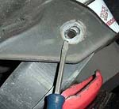
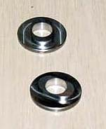

|
Herb's washers |
|
 No Lightning suspension work is complete without a set of Herb Jackson's " Herb's washers" ($50). For ease of factory assembly, one of the Lightning's lower control arms was designed with a slotted lower control arm hole. This allows the control arm to move around in its pivot point, causing a clunking sound. Herb's Washers have a slot-shaped ridge on them, eliminating any possible movement. While my truck has not yet exhibited any symptoms of the problem, apparently all Lightnings do sooner or later. For $50, they are cheap insurance. |